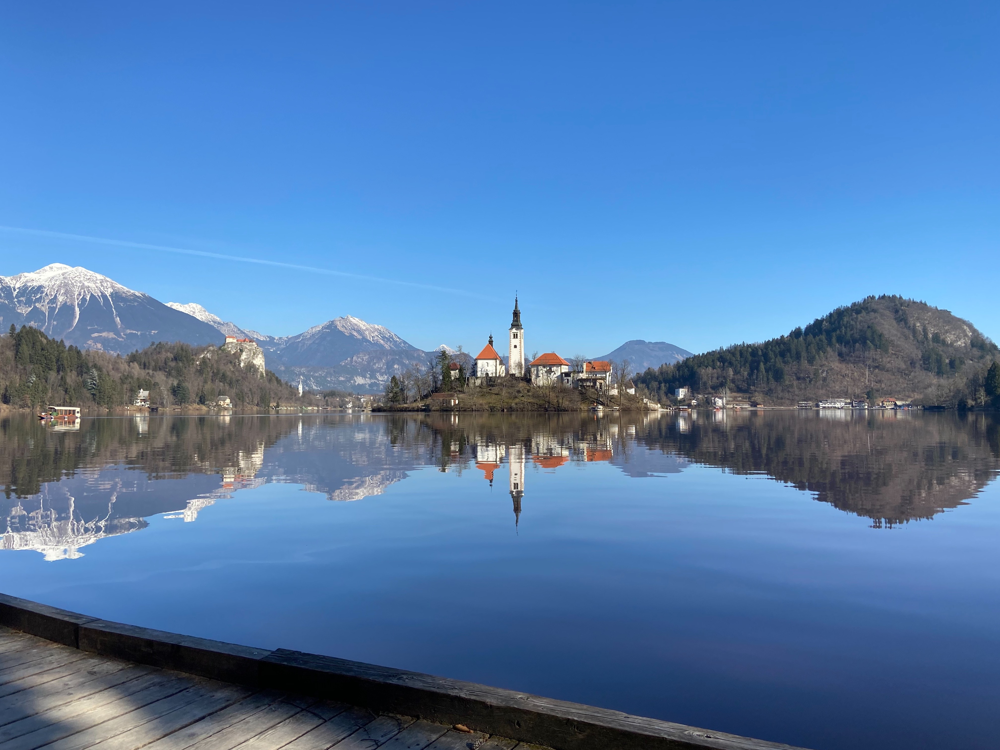

Looking back at a year of staying indoors and Zoom calls.
It seems like many more than 12 months have passed since last January, a result of all concept of time having shifted incomprehensibly this year. Whilst life events did occur, they were muted and unsocial but I was lucky enough to experience the milestones of 2020 as a duo which I am so grateful for.
My last trip abroad was to Slovenia in February, to visit Lake Bled, which was gorgeous. Every corner of the lake was more picturesque than the previous, a real life postcard-perfect town.
While we were in Slovenia there was talk of Covid spreading but it didn't seem threatening at that point and the memory of growing up during SARS in Hong Kong put faith in me that the people in charge knew what they were doing. In 2003 they had managed to contain that pandemic within 3 months so surely they would know how to sort this one out too. But no.
At first being at home all the time seemed exciting. WFH became an instant reality, which had previously been a longed-for dream that would need years of Web Development experience before being able to go freelance. Being home-bound also meant weeknight takeaways were justifiable by way of supporting local businesses, which we did plenty of. Zoom calls and quizzes started out fun and then got tiring but overall I'm thankful for more time chatting to family and friends than ever before.
Moments from 2020 to treasure:
My role went permanent: I was extremely lucky to remain employed and healthy during 2020 and right before the March lockdown my role at work went from contracting to permanent which meant a lot more stability and the increased potential for the next moment...
A place to call our own: We started our journey to purchase a house together, our savings having finally made it to a point that meant we could put down a deposit, but not in London. We'd had our sights set on a coastal town for a while so we began the process there, visiting and viewing places just before the March Lockdown. With a bit of stop-start in-between lockdowns that led to a surge in the market, making everything much slower and more competitive we finally put an offer down in July.
A place to call our own: We started our journey to purchase a house together, our savings having finally made it to a point that meant we could put down a deposit, but not in London. We'd had our sights set on a coastal town for a while so we began the process there, visiting and viewing places just before the March Lockdown. With a bit of stop-start in-between lockdown that led to a surge in the market making everything much slower and more competitive we finally put an offer down in July.
I became an Auntie: My brother and his wife had a beautiful baby girl who I cannot wait to snuggle in the New Year, hopefully not too far into it as I'm just about bursting at the seams with excitement to meet her in person 🥰
2021
I am the type of person to set goals, but they're usually whispered into the ether at New Years Eve parties and then forgotten by February 1st so this year I will set some specific and (fingers crossed) achievable goals for 2021 including: running the Hackney Half Marathon, reading more books and tracking them (this year was pitiful in terms of how many books I read - I'm too embarrassed to even say how many), redesigning my portfolio and meeting my niece.
Here's to hoping 2021 will be a much brighter and more sociable pal than 2020 was!